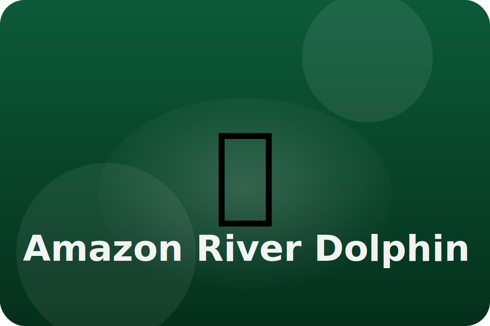

Rainforest
Navigating muddy waters
Amazon river dolphins, also called botos, swim through flooded forests. Their flexible bodies help them turn around trees.
Bendy Neck
Extra neck bones let the dolphin move its head side to side to peek around roots and logs.
Echo Map
Botos send out clicks and listen for echoes, making a sound map even in muddy water.
Pink Camouflage
As they get older, dolphins turn pink, which helps them blend with the red-brown river water during the day.
Keep exploring the Amazon River Dolphin
Learn more from National Geographic Kids: Amazon River Dolphin
Watch the Amazon River Dolphin in action
Amazon Dolphins (National Geographic)